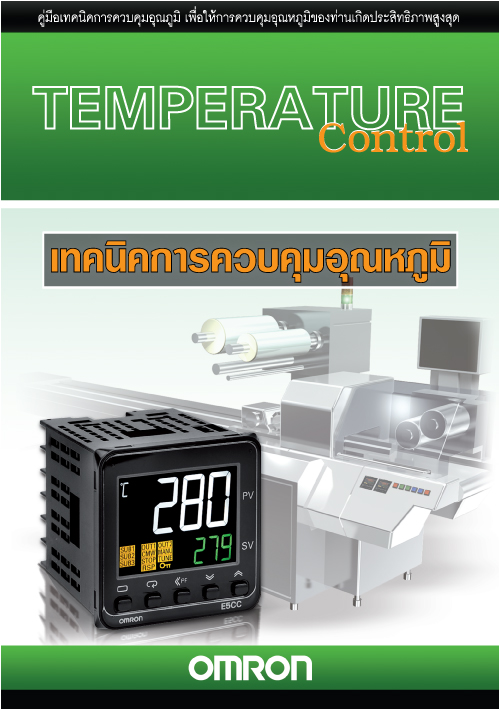
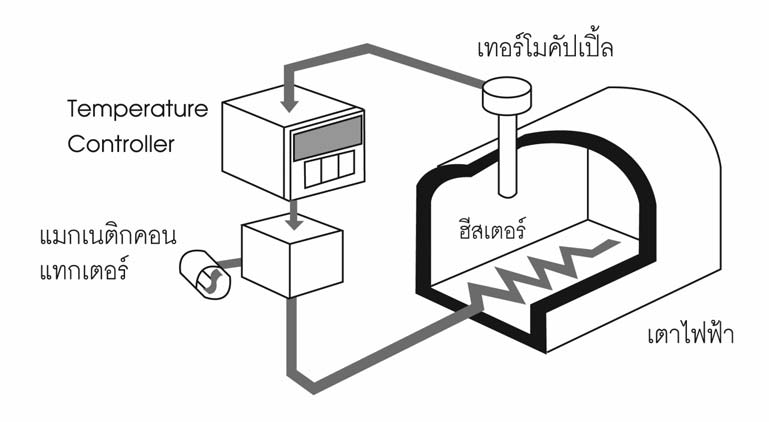
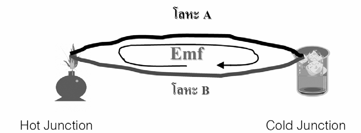
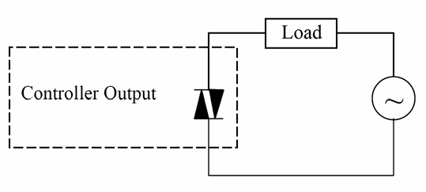
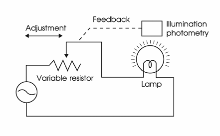
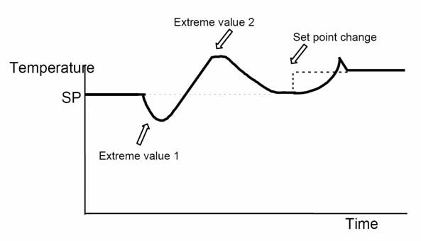

Omron E5CC — Temperature Controller
E5CC คือตัวควบคุมอุณหภูมิ PID ของ Omron — น้องของ E5EC ใหญ่กว่าหน่อย และเป็นรุ่นที่ยังขายอยู่ในปี 2026 บทนี้พาตั้งค่า E5CC, เซ็ต Auto-Tune, สื่อสารผ่าน Modbus กับ CP1L
· Omron E5CC (48×48mm) — รุ่นนิยมในตำราอ. ผดุง
· Omron E5EC (48×96mm) — ใหญ่กว่า, จอชัดกว่า — ใบงาน FBD + Temperature ใช้รุ่นนี้
· Delta DTK4848 — ใช้ใน Mitsubishi track (M06)
หลักการ PID + Auto-Tune เหมือนกัน — ดู M06 สำหรับทฤษฎี PID, ตรงนี้เน้น Practice กับ E5CC
E5CC — รุ่นในห้อง Lab



การถอดรหัสรุ่น E5CC-QQ2ASM-000
| ตำแหน่ง | ค่า | ความหมาย |
|---|---|---|
| 1 | Q | Multi-range input (TC + RTD + DC voltage/current) |
| 2 | Q | Aux output type — 2 = SPST-NO (เปลี่ยนกับฮีตเตอร์ผ่าน SSR) |
| 3 | 2 | 2 Auxiliary outputs |
| 4 | A | Heater Burnout (HB) detection |
| 5 | S | Communication = RS-485 Modbus |
| 6 | M | Event Input function |
| 7-9 | 000 | No additional features |
หลักการของเทอร์โมคัปเปิ้ล

การต่อสาย E5CC

- Power ขั้ว 1-2 รับ AC 100-240V — ใส่ Breaker ทางต้นทาง
- Input — Thermocouple Type K ขั้ว 22 (+) / 23 (-) — สีแดง = +, สีดำ/ขาว = - (ระวังขั้วบวกลบ)
- Output 1 — Heater (SSR) ขั้ว 3 (+) / 4 (-) → ต่อเข้า SSR (Solid State Relay) → SSR คุมไฟ AC เข้าฮีตเตอร์
- RS-485 — Communication ขั้ว 14 (A+) / 13 (B-) → ไปต่อกับ CP1L ผ่าน CIF11
- Event Input — Optional ขั้ว 16-18 → กดปุ่มภายนอกเปิด Auto-Tune หรือ switch SV bank ได้
📟 ลองใช้ Menu E5CC — Interactive Walker
ก่อนเดินไปกดเครื่องจริง — ลองเล่นกับหน้า E5CC จำลองด้านล่าง ดูว่าปุ่ม PF / ▼ / ▲ / O↩ ทำงานยังไง · กดค้าง O↩ 3 วินาที เพื่อเข้า Initial Setting · จากนั้น กด O↩ ค้างอีก 1 วินาที เพื่อเข้า Communications Setting
ตั้งค่าเริ่มต้น
หลังเปิดไฟ E5CC จะแสดง 0.0 และอ่าน PV ไม่ขึ้น (เพราะยังไม่ตั้ง input type):
-
เข้า Initial Setting Mode
กดปุ่ม
Mode (O↩)ค้างประมาณ 3 วินาที — จอจะแสดงin-t -
ตั้ง Input Type
ที่
in-t→ ใช้ ▲▼ เลือก:5= K (Thermocouple Type K, -200 to 1300°C)0= Pt100 (RTD)4= J Thermocouple
O↩เพื่อยืนยัน -
ตั้ง Temperature Unit
เลื่อนหา
d-u→°C(เป็นค่า default) -
ตั้ง Control Period
cp(control period) = 2 วินาที (สำหรับ SSR) หรือ 20s (สำหรับ Relay) -
ออกจาก Initial Setting
กด
Mode (O↩)ค้าง 1 วินาที — กลับสู่หน้า Operation - ตั้ง Set Point จากหน้า Operation กด ▲▼ จนได้ค่าที่ต้องการ (เช่น 60°C) → SV จะติดเขียวที่จอ
SSR — Solid State Relay สำหรับ Heater

หลักการ Closed-loop Control แบบเข้าใจง่าย

🧪 ลองจูน PID เอง — ก่อนกด Auto-Tune ที่ E5CC
ก่อนไปกด AT ที่หน้าตัวเครื่องจริง — ลองเล่นกับ Plant Model ก่อน เพื่อให้เห็นว่า Kp/Ti/Td แต่ละตัวมีผลยังไง (Plant: First-Order Heater, K=1, τ=25s, θ=5s · Step 25→60°C ที่ t=0) · ทฤษฎี Ziegler-Nichols เต็มอยู่ที่ M06
Kp ≈ 100 / P% เช่น P=40% ⇄ Kp=2.5 · Ti กับ Td ที่ E5CC เป็นหน่วยวินาทีเหมือนกับ Simulator นี้
Auto-Tune — ปรับ PID อัตโนมัติ
E5CC มี Auto-Tune ในตัว เหมือน Delta DTK — กระบวนการคล้ายกัน:
- ตั้งระบบให้พร้อม เปิด Power เข้า Heater, ตั้ง Set Point ที่ค่าที่จะใช้จริง (เช่น 60°C)
- รอให้ระบบเข้า Steady State ห้ามทำ AT ตอนเครื่องเย็น — รอจน PV ใกล้ SV (เช่น ±5°C)
-
เริ่ม Auto-Tune
กด
Modeสั้น → เลื่อนหาat→ กดO↩→at-2(100% AT) → ยืนยัน
หน้าจอจะกระพริบat -
รอ ~5-15 นาที
ระบบจะ เปิด-ปิดฮีตเตอร์ค้าง เพื่อวัด Ku และ Pu — เสร็จแล้ว E5CC จะเซฟ Kp/Ti/Td อัตโนมัติ

การ Auto-Tune จะสร้างสัญญาณรูปแบบนี้ — ระบบไปแตะค่า Extreme value 1 (ต่ำสุด) แล้ว Extreme value 2 (สูงสุด) เพื่อวัด Ku (ultimate gain) และ Pu (period) → คำนวณ Kp/Ti/Td ตามสูตร Ziegler-Nichols - ทดสอบ เปลี่ยน SV ไปค่าอื่น (เช่น 80°C) → ดูที่กราฟ Trend ว่าระบบเข้าถึงเร็วและนิ่ง
Modbus Register Map ของ E5CC

| Two-byte addr | หน้าที่ | R/W | หน่วย |
|---|---|---|---|
2000 | PV (Process Value) | R | °C × 10 |
2103 | Set Point (active) | R/W | °C × 10 |
2104 | Alarm Value 1 | R/W | °C × 10 |
2003 | Heater Current 1 | R | A × 10 |
2004 | MV (Heating) | R | % × 10 |
2407 | Proportional Band (P) | R/W | %FS × 10 |
2408 | Integral Time (I) | R/W | s |
2409 | Derivative Time (D) | R/W | s |
ตั้งค่า Communication บน E5CC

PSEL → U-No → BPS → LEN → SbtL → PrtY → SdWt-
เข้า Communications Setting Level
กด
Modeค้าง 3 วินาที จนถึง Initial Setting → กดอีกครั้ง 1 วินาที → เข้า Communications Level -
ตั้งค่าตามนี้
PSEL= Cwf หรือ Mod (Modbus)U-No= 1 (Slave Address)bPS= 96 (= 9600 bps)LEn= 8 bitsSbtL= 1 stop bitPRtY= NonE (Parity = None)SdWt= 20 ms (Send Wait Time)
- ดับไฟ → เปิดใหม่ ค่า Communication จะมีผลหลัง Reboot
CP1L → E5CC: อ่านอุณหภูมิ + เซ็ต Set Point
Logic เดียวกับ O04 — Inverter เปลี่ยนแค่ Slave Address + Register:
; Read PV (2000H)
LD P_On
MOV #0001 D32300 ; Slave 1 (E5CC)
MOV #0003 D32301 ; FC 03 = Read
MOV #0004 D32302 ; bytes
MOV #2000 D32303 ; Register = 2000H (PV)
MOV #0001 D32304 ; 1 register
LD P_1s
OUT A640.00 ; Trigger
; ค่าที่อ่านได้จะอยู่ใน D32355 (response area)
; แปลงจาก × 10 → จริง
LD A640.01 ; Done
DIV D32355 #10 D200 ; D200 = อุณหภูมิจริง (°C)
; Write Set Point (2103H) = 80.0°C
LD W2.00 ; Trigger จาก HMI
MOV #0001 D32300
MOV #0006 D32301 ; FC 06 = Write
MOV #0004 D32302
MOV #2103 D32303 ; Reg 2103H (SP)
MOV #800 D32304 ; 80.0 × 10
OUT A640.00Heater Burnout (HB) Detection
E5CC มีฟังก์ชัน HB — ตรวจจับว่าฮีตเตอร์ขาด/ไหม้ โดยอ่านกระแสที่ไหลผ่านฮีตเตอร์ตอน Output ON:
- ติดตั้ง CT (Current Transformer) E5CC-QQ2ASM มี CT input — สอด CT คล้องรอบสายเฟส L1 ของฮีตเตอร์ → เสียบเข้า CT input ของ E5CC
-
ตั้งค่า HB
hb1= ค่ากระแสต่ำสุดที่ยอมรับได้ (เช่น 5.0A) — ถ้ากระแสต่ำกว่านี้ตอน Heater ON → HB alarm - Alarm Output เซ็ต Aux Output 2 เป็น HB alarm → ส่งสัญญาณไป PLC เมื่อตรวจพบ
เรื่องนอกเหนือ — เทคนิคควบคุมอุณหภูมิ
- เลือก Output ระหว่าง Relay vs SSR — Relay ทนสูงกว่า แต่อายุน้อย (100k ครั้ง), SSR ทำ on/off ความถี่สูงได้ → ใช้กับ Control Period สั้น (~2 วินาที) ทำให้ PID เนียน
- Sensor — TC vs RTD — TC ราคาถูก, ทนอุณหภูมิสูง (1000°C+), แต่ความแม่นยำน้อยกว่า · RTD (Pt100) แม่นกว่ามาก แต่ใช้ได้ถึง 600°C เท่านั้น
- Heating + Cooling Control — E5CC รุ่นที่มี 2 Output คุมทั้ง Heating + Cooling พร้อมกันได้ (เช่น Mold Cooling System)